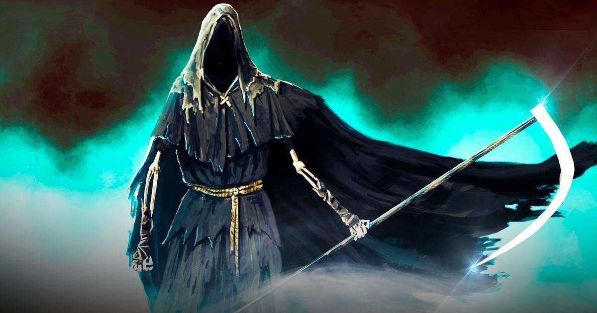

Sebagai seorang Insurance Consultant, saya terbiasa menghadapi berbagai jenis kompetitor. Agen dari perusahaan asuransi lain, broker yang rajin beriklan di internet, hingga staf bank yang menawarkan asuransi sambil membuka rekening. Bahkan, sesama agen dari perusahaan yang sama pun bisa menjadi pesaing dalam merebut perhatian calon nasabah.
Namun, semua kompetitor itu masih bisa saya hadapi. Dengan strategi pemasaran yang tepat, pendekatan personal yang hangat, dan kompetensi yang terus diasah, saya percaya diri untuk bersaing secara sehat. Tapi di luar itu, ada dua kompetitor yang tak terlihat… yang tak bisa saya kalahkan, seberapa hebat pun strategi saya. Mereka adalah lawan sejati yang sering datang tanpa aba-aba, dan ketika mereka muncul, segalanya sudah terlambat.
Mereka adalah: Bayangan Penyakit dan Malaikat Maut.
Seringkali saya mendengar calon nasabah berkata, “Nanti saja dulu, saya pikir-pikir dulu.” Beberapa di antaranya benar-benar butuh waktu. Tapi ada juga yang terus menunda… sampai Bayangan Penyakit datang diam-diam, menjelma menjadi diagnosa yang membuat mereka tidak lagi bisa mengajukan asuransi. Saat itu, mereka baru menghubungi saya. Namun saya pun hanya bisa menjawab, “Maaf, saya sudah berusaha semaksimal mungkin.”
Yang lebih menyedihkan lagi, ketika saya sudah menjelaskan asuransi dengan semangat, si calon nasabah pun terlihat tertarik… namun belum juga memutuskan. Sampai akhirnya kabar duka datang: orang itu sudah dipanggil oleh Malaikat Maut. Dan yang tersisa hanyalah penyesalan — dari keluarga yang ditinggalkan, dari saya yang gagal melindunginya, dan dari janji perlindungan yang tak sempat diwujudkan.
Kesimpulan
Banyak orang merasa dikejar-kejar oleh agen asuransi. Tapi sesungguhnya, lebih baik Anda dikejar-kejar oleh saya… daripada lebih dulu dihampiri oleh Bayangan Penyakit atau Malaikat Maut.
Asuransi bukan tentang ketakutan, tapi tentang perlindungan. Bukan soal kematian, tapi soal cinta yang ingin tetap hidup bahkan setelah kita tiada.
Sebelum dua kompetitor tak terlihat itu datang lebih dulu, izinkan saya membantu Anda hari ini.